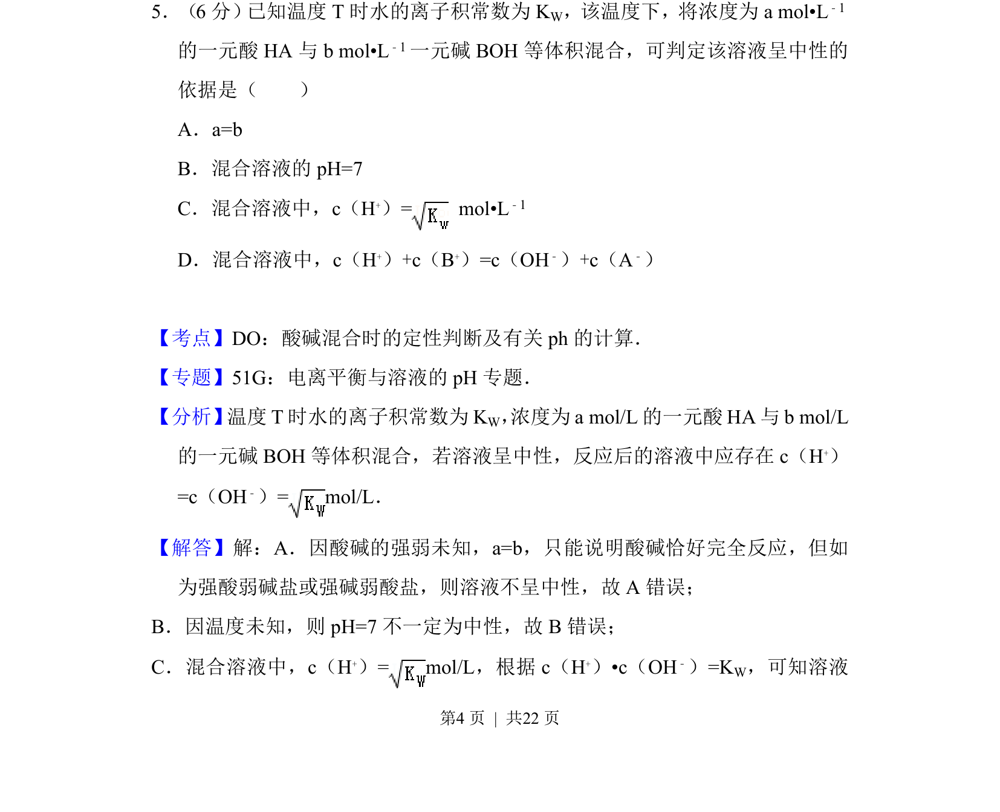
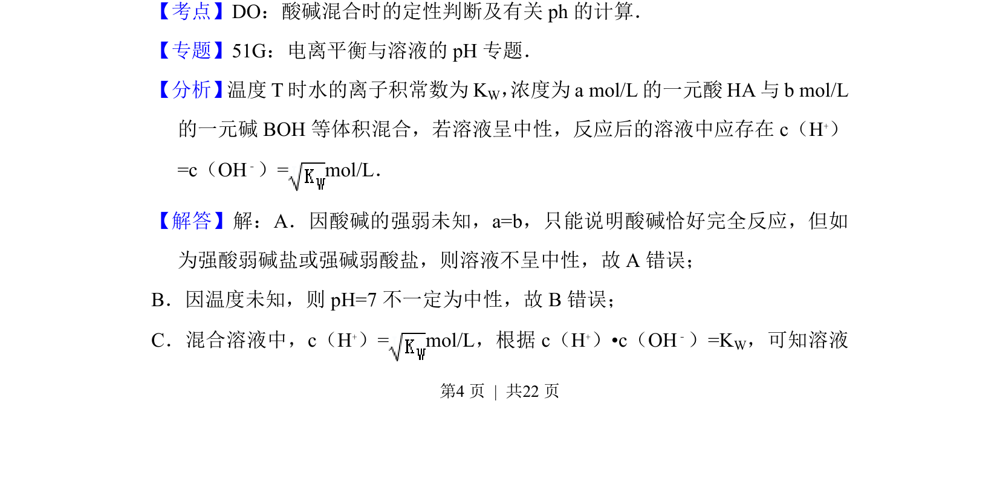
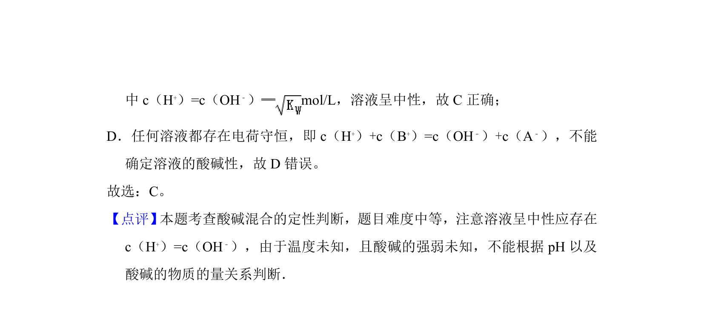

考点：水的离子积常数 酸碱混合定性判断 pH 溶液中离子浓度关系

该题通过水的离子积常数判断酸碱等体积混合后溶液呈中性的条件。


📄 原 PDF 第 4 页：
素材/真题/吉林/2008-2024·（吉林）化学高考真题/2012年高考化学试卷（新课标）（解析卷）.pdf
5．（6分） 已知温度T时水的离子积常数为KW，该温度下，将浓度为a mol•L﹣1 的一元酸HA与b mol•L ﹣1一元碱BOH等体积混合，可判定该溶液呈中性的 依据是（ ） A．a=b B．混合溶液的pH=7 C．混合溶液中，c（H+）= mol•L ﹣1 D．混合溶液中，c（H+）+c（B+）=c（OH﹣）+c（A﹣）
【考点】DO：酸碱混合时的定性判断及有关ph的计算．菁优网版权所有 【专题】51G：电离平衡与溶液的pH专题． 【分析】 温度T时水的离子积常数为KW， 浓度为a mol/L的一元酸HA与b mol/L 的一元碱BOH等体积混合，若溶液呈中性，反应后的溶液中应存在c（H +） =c（OH﹣）= mol/L． 【解答】解：A．因酸碱的强弱未知，a=b，只能说明酸碱恰好完全反应，但如 为强酸弱碱盐或强碱弱酸盐，则溶液不呈中性，故A错误； B．因温度未知，则pH=7不一定为中性，故B错误； C．混合溶液中，c（H +）= mol/L，根据c（H +）•c（OH﹣）=KW，可知溶液